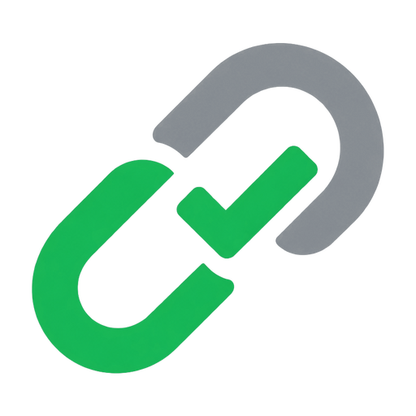
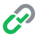

Zero network by default
Every check runs against data bundled in the extension. A fresh install makes no requests at all — not on install, not on hover, not ever, unless you switch on the optional second opinion.

Now live on Chrome Web Store · Manifest V3 · local-first
You read the first word.
Your browser obeys the last one.
InertLink puts a badge next to your cursor before you click — naming the site that actually owns the link. Eighteen checks, on your device, with no network at all by default.
The badge on this page is the extension's own code, imported from
src/content/badge.js — not a mockup.
Everything below happens between resting your cursor and deciding to click.
billing@example.com
Your invoice is ready
Hi — your statement for this month is available.
View invoice →Rest on a link for a quarter of a second. Every link below is inert — none of them go anywhere — but the verdicts are real, computed by the same engine that ships in the extension.
Nothing here resolves. Every hostname uses an RFC 2606 reserved name
(example.com, .invalid) or an RFC 5737 documentation IP —
the same rule the test fixtures follow.
Each signal is an independent check that returns a weight and a reason. They stack — no single rule decides a verdict, which is what keeps one bad heuristic from painting the web red.
Weights are summed into one score, then read against two thresholds. Drag the score.
Thresholds shown are the balanced setting. Strict flags at 12 / 30, relaxed at 30 / 55 — the whole ramp shifts, so sensitivity is one honest dial rather than a per-check toggle.
Every check runs against data bundled in the extension. A fresh install makes no requests at all — not on install, not on hover, not ever, unless you switch on the optional second opinion.
We read the URL string. We never follow it. Resolving a shortener to see where it lands would be a request to the attacker's server, from your IP, triggered by a mouse movement you didn't mean as a click.
Turn on reputation checks and only the hostname is ever sent — never the path, never the query string. Results are cached, so a host is never sent twice.
No site access is requested at install. Click the toolbar icon and it works on that tab for that visit; grant a site, or every site, only if you want it always on.
There is no setup and no account. Out of the box you click the toolbar icon once per page, and that is deliberate — it is the only way to start with no access to any site.
Why the click? A fresh install holds no permission on any website. That click is the permission — Chrome grants InertLink access to that one tab, for that one visit, and takes it back when you leave. Most extensions ask for every site you will ever visit on the day you install them. This one asks for nothing, and lets you widen it below if the click gets tiring.
Works on that tab, for that visit. No permission prompt at all.
Popup → Always run on <host>. Survives reloads and link clicks.
Popup → run on every site. One prompt, then you never click the icon again.
You can withdraw any of it at any time — from the popup, the options page, or
chrome://extensions.
InertLink is live and officially published on the Chrome Web Store. Add it to Chrome in one click, or inspect the source code and build it locally.

Instantly see where links really go before you click. 14 offline heuristic checks, zero network calls by default, and zero site permissions requested on install.
InertLink is open source under MIT. You can audit every line, build the bundle locally, and load it unpacked:
git clone https://github.com/iAaquibjawed/inertlink.git
npm install && npm run buildchrome://extensions and turn on Developer mode
dist/ folder
— not the repo folder above it
Mohammad Aaquib Jawed
AI / Machine Learning Engineer